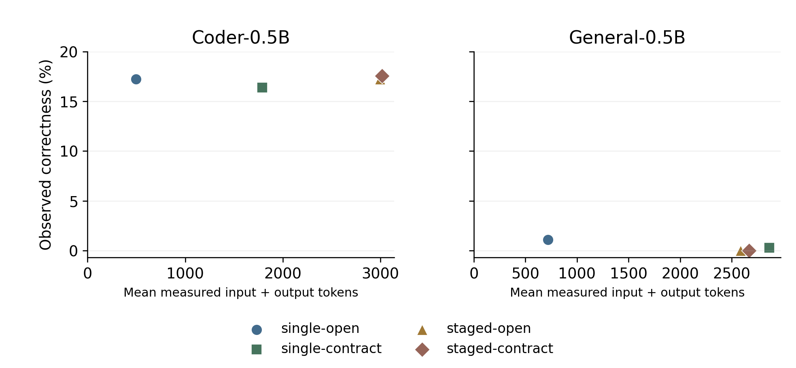

Structural Verification Gates and Role-Staged Workflows in Small Local Language Models
A paired finite-plan study with 2,880 preassigned attempts
Eye172 | Independent research project
AI-assisted working paper - human review pending
Execution: 2026-10-09 to 2026-10-09 UTC
Abstract
We compare structural verification gates and sequential role workflows on 120 parameterized draws (115 distinct semantic payloads) from six synthetic templates and four structural settings. Four conditions, three repeats and two Qwen 0.5B model variants produce 2,880 preassigned attempts. 2876 trials completed and 4 were interrupted by infrastructure protection. No interrupted outcome was replaced by a retry. Models return bounded finite-ID plans; no code produced by evaluated agents executes. Trusted semantic grading is separate from a weaker visible check. Coder-0.5B: effect bound [-0.28, -0.14] percentage points; conditional percentile envelope [-0.83, +0.56]; General-0.5B: effect bound [-0.56, -0.14] percentage points; conditional percentile envelope [-0.97, +0.28]. Six evaluation draws exactly overlapped preflight recovery payloads; this is not a strict semantic holdout. Most measured successes occur in recovery, where input order exposes a shortcut. All completed traces were deterministically replayed. Estimates are conditional on these templates and small related checkpoints; realized compute differs by workflow. The study does not establish general agent superiority or hostile-code sandboxing.
1. Introduction
Agent workflows combine model calls with state, tool feedback and stopping rules. A system may claim completion despite producing an incorrect artifact. A structural check can constrain stopping without covering every semantic requirement. We ask whether requiring real current-artifact verification improves semantic correctness, and whether a sequential role workflow changes that effect.
The contributions are an original synthetic task bank, a capability-limited finite-plan interface, a paired factorial comparison of two workflow choices, and an audit that replays every model interaction against trusted code. This study concerns two small model variants and six task templates. It does not evaluate the broader Agent Deck catalogue, establish a new foundation model, or demonstrate general multi-agent superiority.
The project originally considered executing model-written Python. That experiment was not admitted: the portable QEMU TCG environment was not a supported hostile-code security boundary for the proposed design [10]. The current study changes the scientific object to finite JSON plans interpreted in memory. It must not be presented as a completed coding-agent benchmark.
2. Related work and positioning
Kapoor et al. [1] motivate attention to accuracy, cost, holdouts and reproducibility in agent evaluation. Here, token counts, calls and time accompany correctness. Shared maximum budgets do not imply equal realized compute; the staged workflow mandates additional calls.
EvalPlus [2] illustrates how limited tests miss incorrect generated code. We adopt the separation between a weak visible checker and a stronger external semantic oracle, but evaluated models supply data rather than executable programs; no HumanEval or EvalPlus score is reported.
AgentArch [3] compares interacting design dimensions in enterprise agents. ADAS [4] studies automated agent design. This apparatus neither reproduces their tasks nor searches an architecture space. It compares two implemented choices in a synthetic finite-output setting. This selective review is not a systematic literature review or proof of novelty.
Demsar [7] discusses comparisons across data sets. We preserve task pairing without counting repeated model sampling as independent problems; we do not apply a many-dataset rank test. The Qwen technical reports [5,6] provide model provenance. The related quantized checkpoints are not a random sample of LLMs. Standard learning texts tie generalization to a specified input distribution [14]. Here evaluation covers parameterized instances of shared templates with disclosed exact preflight overlap, not all software tasks. No model training or new learning-theory result is claimed.
3. Methods
Experimental units. Six fixed semantic templates have four structural settings each. Every cell supplies one development instance, one qualification instance and five evaluation instances, with separate seeded generation lineages, which do not guarantee different semantic payloads. There are 168 authored instances, including 120 evaluation draws with 115 distinct semantic payloads. Five exact recovery-payload repeats remain as prespecified draws; different IDs alone are not different semantic problems. Four conditions, three repeats and two models yield 2,880 main assignments. A post-freeze exact-overlap audit also found six evaluation draws (five distinct payloads) already present in development or qualification, all in recovery. Thus the original evaluation bank is not a strict semantic holdout. These draws remain in the frozen primary analysis; a separately labeled sensitivity excludes them. Templates remain shared across splits, so no unseen-template generalization is claimed.
Tasks and grading. All essential rules, data and finite allowed IDs are public in prompts. Gold answers and deterministic semantic grades remain private to the trusted controller. Ranking tests maximum-score consolidation, top-k selection and ASCII ties. Capacity tests bounded optimization with exclusive groups. Dependency scheduling combines precedence and completion deadlines. Recovery simulates journal transitions and injected crashes. Validation checks literal JSON types and record predicates. Freshness resolves versions, expiry, deletion and one-hop dependency validity. No model judges the answers. We record observable requests, outputs and controller transitions; hidden reasoning, attention, internal activations and model intent are not measured.
Oracle controls. Every author gold passes and every empty answer fails. Retained incorrect controls exist per instance. Five templates use separate author algorithms to cross-check answers: rank counting, dynamic programming, exhaustive position checks, predicate filtering and history maxima. These are AI-assisted author checks, not independent human review. Recovery uses canonical positive, every-single-step-omission and repeated-legal-action controls, without an independently implemented full recovery oracle before the freeze. A post-freeze grammar-based reference recognizes each transaction as begin, one-or-more writes, commit, one-or-more recoveries, checkpoint, under the authored increasing-target assumption. It compares retained outputs and mutation/random controls with the original simulator and independently checks the public twelve-step limit. The original external simulator omitted that length requirement, and its visible failure message incorrectly said eight; both defects and their observed impact are reported without modifying frozen traces or sources. Recovery partial scores retain the frozen four-group definition and omit the length group. All task records and controls accompany the local artifact.
Structural settings. L1-L4 are operational labels, not psychometrically calibrated universal difficulty. More records or predicates need not make each sampled instance harder. Settings are reported descriptively; no generic monotonic difficulty effect or common latent ability scale is inferred. Partial score is a mean over template-specific requirement groups, not a cross-template calibrated score.
Workflow intervention. Single conditions use up to four calls in one role context and may stop early. Staged conditions call planner, worker, reviewer and worker. Planner/reviewer proposals cannot install plans. A reviewer may request a real check of the CURRENT installed plan. Workers install artifacts; only the final staged worker can finish. Each role receives its last two own turns and the latest public handoff. Roles share the same model and run sequentially. They are not independently trained or parallel specialist agents.
Stopping intervention. Open permits an eligible solved finish without verification. Contract requires an actual passing structural check bound to the installed plan hash and version. Changing a plan invalidates verification; identical content retains it. Eligible unsolved requests can stop in all conditions; nonfinal staged claims are recorded but cannot stop. Visible checks cover nonempty/unique lists and selected size, budget or completeness rules, deliberately omitting full semantics. A checked accepted artifact can therefore be wrong. Primary correctness always grades the final installed plan, independent of finish acceptance.
Models. Qwen2.5-Coder-0.5B and Qwen2.5-0.5B are both 494.03M-parameter Ollama Q4_K_M artifacts. Larger 3B and 1.5B candidates failed resource qualification under the reserve policy. A prior 1.5B compatibility success did not guarantee feasibility under later host load. Exclusions were recorded before main outcomes. Both main models passed finite-schema and exact input-token accounting checks. Coder-0.5B failed a simple exact instruction while producing valid bounded JSON; instruction performance was separated from interface compatibility and retained.
Serialization and budgets. Ollama 0.40.2 serves a fixed loopback endpoint [8]. Raw ASCII ChatML has no implicit history. Settings: temperature 0.2, top_p 0.9, repeat_penalty 1, num_batch 128, num_ctx 8192, num_predict 192. A JSON schema restricts plan IDs and flag types. A pinned upstream tokenizer processed by tokenizers 0.22.1 independently counts each prompt; equality with backend prompt_eval_count is required. Admission limits are 4,096 prompt tokens and 16,192 effective actual aggregate input+output tokens per trial (stricter than the outer 16,384 protocol ceiling), four model calls and sixteen trusted operations. Each request times out after 70 seconds; no new call starts after 150 seconds. The latter is an admission deadline, not a hard total-wall limit. No silent context truncation is allowed. Input counts are independently verified; output counts come from the backend. Reported tokens include cached prompt tokens and are not measured FLOPs or energy. Trusted-operation counts include finite plan proposals/installs, requested checks and eligible finish assessments; they are not host-command counts.
Randomization. Each model has 1,440 shuffled assignments in same-model blocks of sixteen; another seed shuffles block order. Task/repeat seeds are shared across conditions/models, with repeats spaced by ten and call j using seed+j. Full order and seeds are retained. Seeded generation does not promise bitwise identity across hardware or library versions. Timing includes cold loading and background host scheduling.
Freeze and qualification. A local freeze records 57 input hashes, full schedule and actual UTC time before main inference. It covers tasks, prompts, controller, oracles, tests, tokenizer, safety modules and analysis. Separate development and qualification phases contain 48 real trials each. A development listener-release interruption preserved sixteen observations; only unattempted assignments continued after a lifecycle fix. This local freeze is not public preregistration, an independently witnessed timestamp or external review.
4. Outcomes and analysis
Primary correctness is the conjunction of deterministic semantic groups on the final plan. Secondary outcomes: partial groups, wrong eligible solved claims, wrong controller acceptance, current-plan verification, actual calls/tokens, API time, wall time and stop reasons. Wrong-claim fraction is undefined with no eligible solved claims. Nonfinal staged completion claims are recorded separately and excluded from eligible completion claims.
For task i, model m and condition c, y(i,m,c) is mean correctness over three repeats. The primary contract estimand is the task mean of 0.5 * [(y(single-contract)-y(single-open)) + (y(staged-contract)-y(staged-open))]. Instances and all twenty-four balanced cells have equal weight. Orchestration and interaction contrasts are secondary descriptive quantities. Two per-model effects are reported separately, without pooled-model significance claims.
Ten thousand seeded paired bootstrap draws resample five instances within each of twenty-four template/setting cells. All four conditions and all repeats move together. The percentile 95% interval describes parameter-instance sensitivity conditional on this generator and these fixed templates. It does not measure uncertainty over new templates, model families or all real-world tasks. Five instances per cell and small-model floor effects restrict interpretation. No multiple-comparison p-values or publication-level power claim is made.
Every assignment is retained. Missing observations are not replaced with retries. The original complete-series audit requires 2,880 completed observations and attested cleanup. Its source remains frozen. A separately disclosed incident-aware extension requires every original assignment to be accounted for, retaining unknown interrupted outcomes with assigned/observed denominators and worst/best correctness bounds. Scientific claims cannot be rescued by deleting inconvenient trials.

Figure 1. Implemented workflow schematic. Both variants share finite in-memory state; role proposals and installed plans have different permissions. The completion gate uses a structural check. External semantic grades remain private. Only eligible finish stages can stop; feedback and the exact retained history are specified in Methods.
5. Results and infrastructure accounting
All 2,880 original assignments are accounted for as completed or infrastructure-interrupted attempts. Completed: 2876; interrupted with unknown full outcome: 4. Complete records were not rerun and interrupted attempts were not replaced. Raw partial traces and original incident states remain. Counts in Table 1 are descriptive repeat-trials; primary uncertainty uses parameterized task instances.
5.1 Correctness and resource use
Table 1. Observed correctness and resource use; unknown interrupted outcomes are excluded from observed-rate and cost denominators.
| Model / condition | Correct / observed / assigned | Observed success | Mean calls | Mean tokens | Mean wall s |
|---|---|---|---|---|---|
| Coder-0.5B / single-open | 62 / 360 / 360 | 17.2% | 1.02 | 495 | 0.57 |
| Coder-0.5B / single-contract | 59 / 360 / 360 | 16.4% | 2.13 | 1787 | 0.90 |
| Coder-0.5B / staged-open | 62 / 360 / 360 | 17.2% | 4.00 | 2996 | 1.78 |
| Coder-0.5B / staged-contract | 63 / 359 / 360 | 17.5% | 4.00 | 3015 | 1.82 |
| General-0.5B / single-open | 4 / 360 / 360 | 1.1% | 1.32 | 718 | 0.51 |
| General-0.5B / single-contract | 1 / 359 / 360 | 0.3% | 3.31 | 2865 | 0.85 |
| General-0.5B / staged-open | 0 / 359 / 360 | 0.0% | 4.00 | 2585 | 1.24 |
| General-0.5B / staged-contract | 0 / 359 / 360 | 0.0% | 4.00 | 2669 | 1.26 |

Figure 2. Observed success versus measured mean token cost, with a common 0-20% vertical scale (small marker padding below zero). Descriptive repeat-trial means; no independent-repeat error bars or equivalence of compute is implied.
Table 2. Exact worst/best missing-outcome identification bounds on the frozen contract estimand, with generator-conditional paired bootstrap endpoint envelope. A collapsed bound is an observed point effect. This is not a model/template-population confidence claim.
| Model | Primary effect bounds (pp) | Paired percentile envelope (pp) | Complete-case instances |
|---|---|---|---|
| Coder-0.5B | [-0.28, -0.14] | [-0.83, +0.56] | 119 |
| General-0.5B | [-0.56, -0.14] | [-0.97, +0.28] | 117 |

Figure 3. Dark segments show missing-outcome identification bounds; grey segments show the paired generator-conditional percentile envelope. A dot is drawn only when effect bounds collapse to a measured point. This is not an interval over new task templates or model families.
5.2 Completion reliability
Table 3. Completion reliability. Claims may outnumber trials when rejected claims are followed by another turn. Interrupted claims are not silently added to measured denominators.
| Model / condition | Wrong / eligible solved claims | Wrong-claim fraction | Wrong accepted / assigned | Final checks / observed |
|---|---|---|---|---|
| Coder-0.5B / single-open | 295/357 | 82.6% | 295/360 | 230/360 |
| Coder-0.5B / single-contract | 684/743 | 92.1% | 164/360 | 229/360 |
| Coder-0.5B / staged-open | 132/135 | 97.8% | 132/360 | 240/360 |
| Coder-0.5B / staged-contract | 162/173 | 93.6% | 95/360 | 243/359 |
| General-0.5B / single-open | 264/266 | 99.2% | 264/360 | 21/360 |
| General-0.5B / single-contract | 867/867 | 100.0% | 12/360 | 13/359 |
| General-0.5B / staged-open | 42/42 | 100.0% | 42/360 | 19/359 |
| General-0.5B / staged-contract | 70/70 | 100.0% | 0/360 | 8/359 |
Coder-0.5B: complete-case role contrast +0.56 pp; interaction +1.12 pp; complete-case contract -0.28 pp over 119 fully observed instances. These are explicitly descriptive after excluding incomplete instance cells.
General-0.5B: complete-case role contrast -0.57 pp; interaction +0.57 pp; complete-case contract -0.28 pp over 117 fully observed instances. These are explicitly descriptive after excluding incomplete instance cells.
The series spans 136.8 elapsed minutes including interruption/review and job lifecycle. Completed trials consumed 8,549 model calls and 6,155,745 measured input+output tokens. Full interrupted-request tokens are unknown. No paid model API was used; electricity and hardware costs were not metered. Recorded completed stop categories: solved_finish=1141, model_call_cap=1598, unsolved_finish=137.
5.3 Sensitivity analyses and apparatus audit
Post-hoc semantic overlap sensitivity: Coder-0.5B: -0.24 pp; General-0.5B: -0.23 pp. Unique payloads receive equal weight within cells, cells equal weight, incomplete groups excluded. This descriptive change of weighting does not replace the frozen estimand.
3 heartbeat-loss interruptions were retained: 2 before task admission and 1 during an inference request. Only in-request interruptions add an unknown task outcome. Cleanup was attested and original STOP files preserved. Boolean-only logs did not identify the first failures. A separately pinned diagnostic observer later captured a read PermissionError. The exact historical Windows cause remains unproven; contention during file replacement is consistent with the evidence. A native share-delete reader failed its held-reader replacement fixture and was rejected without model-run use. The qualified successor serializes private read/write operations with a Windows mutex [17,18], capped at 100 ms acquisition. Timeout, abandoned ownership, invalid/unreadable content and stale heartbeat still fail closed; the original five-second age limit and resource thresholds remain. Three mutex controls and a two-process fixture with 968 reads and 960 writes passed. The I/O adapter can add a bounded lock wait to a monitor pass. This post-freeze host instrumentation is separately hashed; original scientific prompts, roles, model settings, grading and schedule remain frozen.
Post-freeze amendment. An audit-only tuple/list serialization comparison defect was corrected using canonical JSON comparison; scores and frozen controller were unchanged. Resource incidents were reviewed by the trusted Codex operator, not an independent human. Frozen sources, prompts, seeds and original assignment order remain unchanged. Only never-attempted assignments continued in new retained phases after headroom and owned cleanup were checked; incident STOP files were not reset. Original complete-series analysis remains preserved. A separately labeled incident-aware analysis reports worst/best bounds and paired endpoint envelopes, without inventing unknown outcomes. Missingness may be informative; no missing-at-random assumption is used for the bounds.
Exact preflight-overlap sensitivity: six recovery evaluation draws (five distinct payloads) match development or qualification. Excluding these payloads and weighting unique complete payloads within cells gives Coder-0.5B: -0.05 pp over 109 complete unique payloads; General-0.5B: -0.17 pp over 107 complete unique payloads. This is post hoc and does not replace the frozen primary analysis or make the original split a strict holdout.
Post-freeze recovery reference: 9998 mutation/random/canonical cases agree with the original semantic simulator when length is excluded; 478 measured recovery outcomes also agree with the stricter public-length-aware reference. The original external oracle omitted max_steps; 7 measured final plans exceeded it but were already incorrect on other requirements. Thus no completed binary correctness changed in this data. Partial recovery scores omit length. The visible-check message incorrectly says eight for a numeric limit of twelve, appearing 63 times across retained prompt/tool traces (not distinct trials). These are disclosed apparatus defects, not evidence of general oracle perfection.
5.4 Observable workflow diagnostics
| Model / condition | Empty final / observed | Premature nonfinal claims (events / trials) | Correct but not accepted |
|---|---|---|---|
| Coder-0.5B / single-contract | 0/360 | 0 / 0 | 0 |
| Coder-0.5B / single-open | 0/360 | 0 / 0 | 0 |
| Coder-0.5B / staged-contract | 0/359 | 336 / 215 | 52 |
| Coder-0.5B / staged-open | 0/360 | 325 / 194 | 59 |
| General-0.5B / single-contract | 315/359 | 0 / 0 | 1 |
| General-0.5B / single-open | 296/360 | 0 / 0 | 2 |
| General-0.5B / staged-contract | 333/359 | 39 / 39 | 0 |
| General-0.5B / staged-open | 297/359 | 49 / 40 | 0 |
These are descriptive recorded behaviours, not measurements of hidden reasoning or intent. Semantic correctness is distinct from controller acceptance. Group errors can overlap. Full prompt/output/cached-token composition and per-template failure groups accompany descriptive-diagnostics.json; cached-token counts are not FLOPs.
| Model / condition | Accepted / observed | Coverage | Correct among accepted | Error among accepted |
|---|---|---|---|---|
| Coder-0.5B / single-contract | 223/360 | 61.9% | 59/223 | 73.5% |
| Coder-0.5B / single-open | 357/360 | 99.2% | 62/357 | 82.6% |
| Coder-0.5B / staged-contract | 106/359 | 29.5% | 11/106 | 89.6% |
| Coder-0.5B / staged-open | 135/360 | 37.5% | 3/135 | 97.8% |
| General-0.5B / single-contract | 12/359 | 3.3% | 0/12 | 100.0% |
| General-0.5B / single-open | 266/360 | 73.9% | 2/266 | 99.2% |
| General-0.5B / staged-contract | 0/359 | 0.0% | 0/0 | undefined |
| General-0.5B / staged-open | 42/359 | 11.7% | 0/42 | 100.0% |
Post-hoc acceptance-coverage diagnostic. Lower wrong acceptance per assignment may reflect more abstention or rejected finishes. Conditional error is therefore reported among actually accepted artifacts and is undefined with no acceptance. This table prevents treating a low acceptance count as evidence that produced answers became more correct; interrupted outcomes are excluded.
| Model / condition | Oracle-pass state at any stage | Earlier pass, wrong final | Pass-to-fail changed installs |
|---|---|---|---|
| Coder-0.5B / single-contract | 59 | 0 | 0 |
| Coder-0.5B / single-open | 62 | 0 | 0 |
| Coder-0.5B / staged-contract | 63 | 0 | 0 |
| Coder-0.5B / staged-open | 63 | 1 | 1 |
| General-0.5B / single-contract | 1 | 0 | 0 |
| General-0.5B / single-open | 4 | 0 | 0 |
| General-0.5B / staged-contract | 0 | 0 | 0 |
| General-0.5B / staged-open | 0 | 0 | 0 |
Post-hoc trajectory diagnostic. Counts use only actual installed artifacts, exclude read-only proposals, and apply the frozen external grader. The first two columns count trials; the final column counts changed-installation events and can exceed trials. Recovery length remains omitted from this frozen grade. A passed intermediate artifact followed by a wrong final artifact documents observable regression, without establishing why it happened or identifying a causal mediator.
5.5 Shortcut diagnostics
| Template | First allowed ID | Entire manifest order |
|---|---|---|
| capacity | 1/20 | 0/20 |
| dependency | 0/20 | 0/20 |
| freshness | 0/20 | 2/20 |
| ranking | 0/20 | 0/20 |
| recovery | 0/20 | 20/20 |
| validation | 10/20 | 0/20 |
Two deterministic input-only diagnostic methods are scored once per evaluation draw, without model calls, retries or semantic scores used to construct plans. Manifest order solves 20/20 recovery draws; the first ID solves 10/20 validation draws. Therefore these templates contain strong shortcuts. This post-hoc control does not replace treatments, become a prespecified baseline or validate reasoning ability. Recovery success cannot be interpreted as evidence of complex transaction reasoning.
5.6 Interpretation within the tested apparatus
Coder-0.5B: the frozen contract-minus-open correctness effect lies between -0.28 and -0.14 percentage points under extreme unknown incident outcomes. Its conditional percentile endpoint envelope includes zero. This statement concerns parameter variation within the authored cells, not statistical significance over new task or model populations.
Coder-0.5B: 232/246 observed correct final plans came from recovery, the template solved by the input-order baseline. Thus the aggregate success rate largely reflects a known shortcut rather than demonstrated performance across the other planning requirements.
Observed staged token cost averaged 2.63 times single-workflow cost. Wrong accepted final artifacts were 427/720 in open conditions and 259/719 under the structural gate. These are descriptive observed aggregates, with interrupted outcomes excluded. A nonzero gated error count demonstrates that a passing structural check is insufficient for semantic correctness. Cost and role comparisons cannot isolate agent count because prompts, mandatory turns and information flow change together.
General-0.5B: the frozen contract-minus-open correctness effect lies between -0.56 and -0.14 percentage points under extreme unknown incident outcomes. Its conditional percentile endpoint envelope includes zero. This statement concerns parameter variation within the authored cells, not statistical significance over new task or model populations.
General-0.5B: 5/5 observed correct final plans came from recovery, the template solved by the input-order baseline. Thus the aggregate success rate largely reflects a known shortcut rather than demonstrated performance across the other planning requirements.
Observed staged token cost averaged 1.47 times single-workflow cost. Wrong accepted final artifacts were 306/719 in open conditions and 12/718 under the structural gate. These are descriptive observed aggregates, with interrupted outcomes excluded. A nonzero gated error count demonstrates that a passing structural check is insufficient for semantic correctness. Cost and role comparisons cannot isolate agent count because prompts, mandatory turns and information flow change together.
The shortcut controls limit interpretation of successful outputs: recovery can be solved by input order alone, and validation has a strong first-ID shortcut. Completion acceptance, structural validity and semantic correctness answer different questions. The retained traces allow each to be checked separately. These workflow comparisons cover the implemented tasks and model settings; they do not validate the catalogue architectures or demonstrate newly learned algorithms.
6. Security, reproducibility and data integrity
The model acts only through finite plan IDs, a verification flag and a completion enum. Requests are size/depth/type checked before dispatch. Paths, URLs, code and unknown IDs have no interpreter meaning. No shell, dynamic code execution, host-file tools, external network tools, secrets or credentials are exposed. All task transitions run in pre-authored trusted code over synthetic in-memory state. Under intact trusted components, induction over admitted turns gives an interface-level capability argument: validated values can change only the permitted synthetic state and completion decision, never select a host path, command or URL. This is inspected code reasoning, not formal verification or an OS-sandbox proof. The private stop path and controller details are absent from model prompts.
Each inference server starts suspended, enters an owned Windows Job, then resumes [9]. Kill-on-close, three-GiB commit cap, eight-process limit and forty-percent CPU cap bound resource use. An independent supervisor checks persistent stops, five-second heartbeat, root exit, logs and memory/disk floors. Unknown listeners are never adopted or killed. Normal chunks contain at most sixteen trials, cease new admission after 330 seconds, and have a 590-second lifetime cap. Owned cleanup is attested before another chunk starts.
These restrictions are not a hostile-native-code sandbox. Ollama, Windows, Python, CUDA and the driver remain trusted. A compromised native binary could access current-user files. Windows Job limits do not impose a separate GPU-memory quota. No AppContainer profile was created on C. Cloud inference is disabled and endpoints fixed, but this is not OS-wide network isolation. Co-resident hostile processes and kernel/driver compromise are outside the tested boundary. The host red button persists a master stop; production security stops are not automatically reset.
Completed traces retain public prompts, settings, raw outputs, parsed plans, checks, hashes/versions, decisions, counts and times. Hash chains have saved head/count anchors. A deterministic replay compares prompts and transitions, regrades plans and verifies schedules, tokens, hashes and cleanup. This is internal audit consistency, not independent replication or externally notarized proof. An interrupted request may lack a complete raw response and backend token count; such records are disclosed rather than reconstructed as observations.
Authored files, weights, temp/cache paths and results reside on D. Installed system tools are read from C. OS-managed paging, GPU and app activity cannot be guaranteed to make zero C writes. The live website, its repository, QAAI and frozen v1 data are outside scope. This research has not been deployed or publicly registered.
7. Limitations and interpretation
Templates are small, synthetic and fully specified. Separate seeds do not make them independent semantic domains. An overlap audit found five exact repeated recovery payloads: 120 evaluation draws contain 115 distinct payloads. Draws remain in the frozen estimand; a separately labeled descriptive deduplication sensitivity is reported. There is no blind human difficulty annotation, held-out template experiment, long-horizon repair, browser interaction, retrieval benchmark or adversarial security test. This study cannot validate hundreds of catalogue entries. The tasks were authored for this study; their common algorithms may still be familiar from model training.
A post-hoc shortcut audit shows that copying the complete input manifest solves every recovery evaluation draw, while selecting its first ID solves half of validation draws. Recovery action order reveals the canonical solution and validation authoring always makes A valid. These are material construct-validity limitations: reported correctness on these templates does not demonstrate sophisticated reasoning. A successor bank should randomize opaque labels and record/action order, reject cross-split semantic overlap before freezing, and test shortcut baselines before any model evaluation. These repairs were not retroactively installed into this experiment.
Both models are small related Qwen variants with the same quantization class. Low capability, output grammar behaviour and limited output budget can dominate workflow effects. Poor Coder-0.5B warmup instruction compliance was retained. Stronger models, larger budgets or different wording may change results. No effect of model size is identifiable.
Single and staged conditions differ in mandatory calls, prompts and information flow. The experiment compares implemented packages under common maximum budgets, not isolated causal agent count or equal realized compute. Required structural verification can alter reasoning and stopping without checking full semantics. Effects must be read alongside costs and wrong accepted artifacts.
One workstation ran concurrent applications with nonstationary memory availability. Timing includes loading and host scheduling. Energy was not metered. The local freeze has no external witness. AI-assisted authoring of generator, controller, oracle and paper permits correlated mistakes. Separate algorithms and replay reduce specific risks without replacing independent review. Resource incidents and missing observations are reported explicitly; no unmeasured outcome is filled in as fact.
8. Conclusion
This bounded study compares verification-gated and role-staged finite-plan workflows with locally preserved evidence. Its measured effects and data-integrity findings support only the stated templates, model variants and constraints. A passing structural check is weaker than full semantic correctness. Further work requires independently reviewed tasks, stronger models, compute-matched conditions and unseen-template replication. Results do not justify unrestricted generated-code execution or claims that a catalogue architecture is generally validated.
9. Ethics, attribution and availability
All task records are synthetic, with no patient, applicant, customer, credential or personal data. No human subjects, crowdsourcing or recruitment occurred. No IRB approval or ethics-committee review is claimed. A passed structural check can be mistaken for evidence that the answer is correct or safe. We therefore report acceptance and external semantic correctness separately.
Eye172 is the project-owner alias. Codex assisted design, apparatus authoring, literature selection, execution, debugging, audit and manuscript preparation. Evaluated models ran locally through Ollama. This is an AI-assisted working paper requiring human review, without peer review, venue acceptance or independent replication. Dates are actual; no historical completion claim is made.
The two main upstream model licenses are Apache-2.0 [12,13]. Tokenizers 0.22.1 uses Apache-2.0 [15]; Ollama source uses MIT [16]. Dependency license text and acquisition provenance are retained. Content-addressed manifests, weights hashes and license links are retained; weights are excluded from the compact evidence package. Task data and controller are original AI-assisted artifacts, without copied benchmark answers. Scholarly sources are credited. Checksums and source evidence do not establish universal supply-chain security.
The local package contains tasks, controls, schedule, frozen source, raw traces, per-trial CSV, statistics, audit, protocol, figures, incident reviews and paper source. Analysis replay needs no inference. A fresh inference replication must use a new labeled output root and preserve the original freeze. Public release and venue submission remain future actions for owner review; no public-release claim is made here.
References
[1] Kapoor, S., et al. (2024). AI Agents That Matter. arXiv:2407.01502v1. Source.
[2] Liu, J., Xia, C. S., Wang, Y., Zhang, L. (2023). Is Your Code Generated by ChatGPT Really Correct? Rigorous Evaluation of Large Language Models for Code Generation. arXiv:2305.01210v3. Source.
[3] Bogavelli, T., Sharma, R., Subramani, H. (2026 revision). AgentArch: A Comprehensive Benchmark to Evaluate Agent Architectures in Enterprise. arXiv:2509.10769v2. Source.
[4] Hu, S., Lu, C., Clune, J. (2025 revision). Automated Design of Agentic Systems. arXiv:2408.08435v2. Source.
[5] Hui, B., et al. (2024). Qwen2.5-Coder Technical Report. arXiv:2409.12186v3. Source.
[6] Qwen Team (2024). Qwen2.5 Technical Report. arXiv:2412.15115. Source.
[7] Demsar, J. (2006). Statistical Comparisons of Classifiers over Multiple Data Sets. JMLR 7:1-30. Source.
[8] Ollama. Generate API. Retrieved 2026-10-10. Source.
[9] Microsoft. Job Objects. Retrieved 2026-10-10. Source.
[10] QEMU. Security and supported configurations. Retrieved 2026-10-10. Source.
[11] NeurIPS. Paper Checklist Guidelines. Reporting guidance; no venue submission claimed. Retrieved 2026-10-10. Source.
[12] Qwen. Coder-0.5B upstream Apache-2.0 license. Source.
[13] Qwen. General-0.5B upstream Apache-2.0 license. Source.
[14] Goodfellow, I., Bengio, Y., Courville, A. (2016). Deep Learning. MIT Press, Chapter 5: Machine Learning Basics. Selected generalization passage. Source.
[15] Hugging Face. tokenizers 0.22.1, Apache-2.0 source license. Source.
[16] Ollama. MIT source license; portable binary acquisition evidence retained separately. Source.
[17] Microsoft. Using Mutex Objects. Retrieved 2026-10-10. Source.
[18] Microsoft. WaitForSingleObject. Retrieved 2026-10-10. Source.
Appendix A. Structural settings and true scope
Ranking: 4/5/6/7 IDs, 1/3/5/7 duplicate rows, k=2/3/3/4; maximum per ID, exact membership and tie order.
Capacity: 4 to 7 items, growing budget range, zero to three possible exclusive group names; exact optimal value subject to budget and groups. More groups may reduce feasible choices, so settings are not guaranteed monotonically harder.
Dependency: 4 to 7 jobs, edge probabilities .27/.39/.51/.63, slack ranges 0..3 down to 0; complete unique schedule, precedence and every cumulative deadline.
Recovery: one transaction/no crash; one transaction/crash; two transactions/first crashes; two transactions/both crash. Five canonical steps per transaction; max twelve. Synthetic journal model, not a real filesystem transaction guarantee.
Validation: integer bounds, then positive value, ready status and globally unique key; booleans/strings/null are not integers. Freshness: 4 to 7 keys, 1 to 4 extra events, deletion from L2, dependencies from L3; exact latest accepted version, strict expiry, tombstone and one-hop version checks. One-hop validity is an explicit task convention, not every real cache policy.
Seeds use split offsets 100000/200000/300000, template offset 1000, setting offset 100 and instance offset 0..4. All records are disclosed. Five instances per template/setting are the limit of parameter-instance coverage.
Appendix B. Per-template observed correctness
Coder-0.5B
| Template | Single open | Single contract | Staged open | Staged contract |
|---|---|---|---|---|
| capacity | 0/60 | 0/60 | 0/60 | 0/60 |
| dependency | 0/60 | 0/60 | 0/60 | 0/60 |
| freshness | 3/60 | 2/60 | 4/60 | 4/59 |
| ranking | 1/60 | 0/60 | 0/60 | 0/60 |
| recovery | 58/60 | 57/60 | 58/60 | 59/60 |
| validation | 0/60 | 0/60 | 0/60 | 0/60 |
General-0.5B
| Template | Single open | Single contract | Staged open | Staged contract |
|---|---|---|---|---|
| capacity | 0/60 | 0/60 | 0/59 | 0/60 |
| dependency | 0/60 | 0/60 | 0/60 | 0/60 |
| freshness | 0/60 | 0/60 | 0/60 | 0/60 |
| ranking | 0/60 | 0/60 | 0/60 | 0/60 |
| recovery | 4/60 | 1/59 | 0/60 | 0/59 |
| validation | 0/60 | 0/60 | 0/60 | 0/60 |
Appendix C. Setting-level observed correctness
| Model / setting | Single open | Single contract | Staged open | Staged contract |
|---|---|---|---|---|
| Coder-0.5B / L1 | 19/90 | 16/90 | 18/90 | 18/90 |
| Coder-0.5B / L2 | 14/90 | 13/90 | 15/90 | 15/90 |
| Coder-0.5B / L3 | 15/90 | 15/90 | 14/90 | 15/89 |
| Coder-0.5B / L4 | 14/90 | 15/90 | 15/90 | 15/90 |
| Model / setting | Single open | Single contract | Staged open | Staged contract |
|---|---|---|---|---|
| General-0.5B / L1 | 0/90 | 0/90 | 0/90 | 0/90 |
| General-0.5B / L2 | 0/90 | 0/89 | 0/89 | 0/90 |
| General-0.5B / L3 | 1/90 | 0/90 | 0/90 | 0/89 |
| General-0.5B / L4 | 3/90 | 1/90 | 0/90 | 0/90 |
Appendix D. Reporting checklist
Claims and limitations: stated within finite-plan scope. Theory/proofs: not applicable; no learning theorem or training method. Reproducibility: protocol, preserved source, exact records, seeds and internal replay; independent replication absent. Public code/data: not yet released, full local package available. Uncertainty: paired stratified sensitivity intervals with missingness bounds where applicable, not template/model-population coverage. Compute: one i5-11400H /16GiB /RTX3050 Laptop 4GiB Windows10 workstation, measured calls/tokens/time; failed preflights and incidents retained, no energy meter.
Ethics/human subjects: synthetic only, no approval claimed. Assets: original data, version/license provenance, cited creators. LLM use: explicit both evaluated models and Codex-assisted methods/code/writing. Human review: absent; required before submission. Registration/venue: local pre-execution freeze only, no certification. Organization follows NeurIPS transparency guidance [11]; this adapted self-check is not the official submission form or a claim of compliance with every venue rule.
Appendix E. Pre-study incidents
Retained history includes larger-model resource failures; initial GPU discovery NTSTATUS 0xC0000409 before task inference; Vulkan disablement; a 0.5B warmup fixture that incorrectly conflated instruction compliance with interface compatibility and failed before saving its response; and a development listener-release stop after sixteen observations. That lost warmup response is disclosed, never fabricated. Fixes occurred before main freeze. Completed development outcomes were not repeated. Prior v1 108 runs and blocked v2 arbitrary-code experiments are separate and excluded from the main-series count.
Appendix F. Integrity, pins and main incidents
Freeze SHA-256: c31985f05419d9f08a488a6e1a24ed0a8c7186d00914a33036dbc15e711acd4c
Audit counts: {"infrastructure_interrupted_assignments": 4, "owned_jobs_cleaned": 186, "partial_returned_turns_checked": 9, "partial_traces_prefix_replayed": 4, "trials_regraded_and_replayed": 2876, "turns_token_checked": 8549}
Assignment 221 / eval-0-freshness-L3-evaluation-2-staged-contract-r1: host_resource_pressure; owned cleanup True; completed partial turns 2; full outcome unknown and not retried.
Assignment 1286 / eval-1-capacity-L2-evaluation-1-staged-open-r2: host_resource_pressure; owned cleanup True; completed partial turns 3; full outcome unknown and not retried.
Assignment 1292 / eval-1-recovery-L3-evaluation-0-staged-contract-r2: host_resource_pressure; owned cleanup True; completed partial turns 3; full outcome unknown and not retried.
Assignment 2398 / eval-1-recovery-L2-evaluation-3-single-contract-r2: heartbeat_loss; owned cleanup True; completed partial turns 1; full outcome unknown and not retried.
| Pin | Value |
|---|---|
| Ollama executable SHA-256 | 9eaec399fd941073f8ddfbd56e0447f77fca5c006b26b8b1874a7fb12719b2a0 |
| Coder-0.5B manifest digest | 4ff64a7f502a08b7616edb8ca0a79eb1853fc363d842b7df4b46915d11a3fb09 |
| General-0.5B manifest digest | a8b0c51577010a279d933d14c2a8ab4b268079d44c5c8830c0a93900f1827c67 |